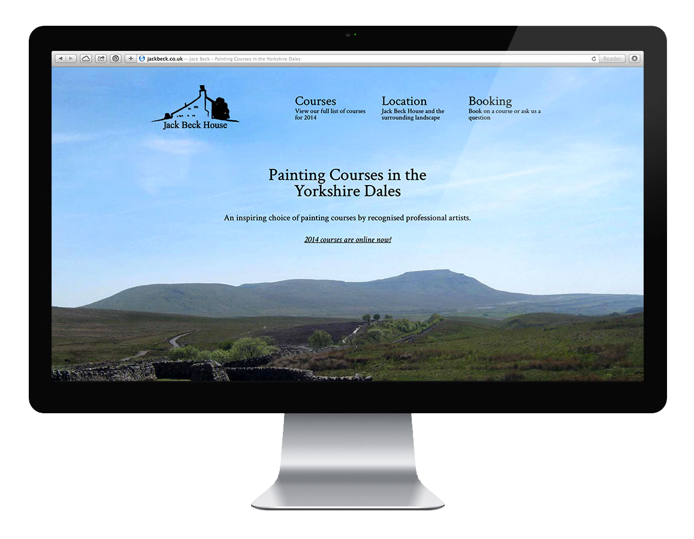
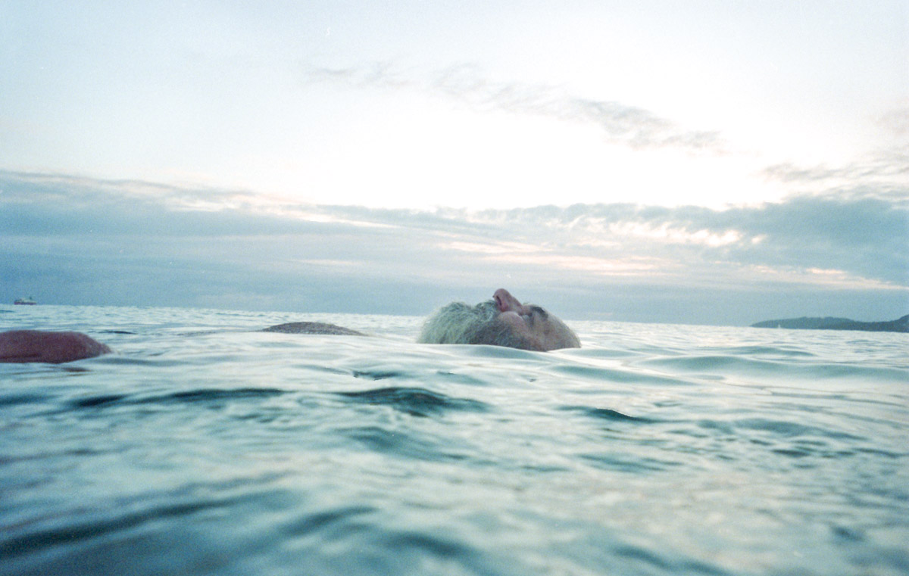
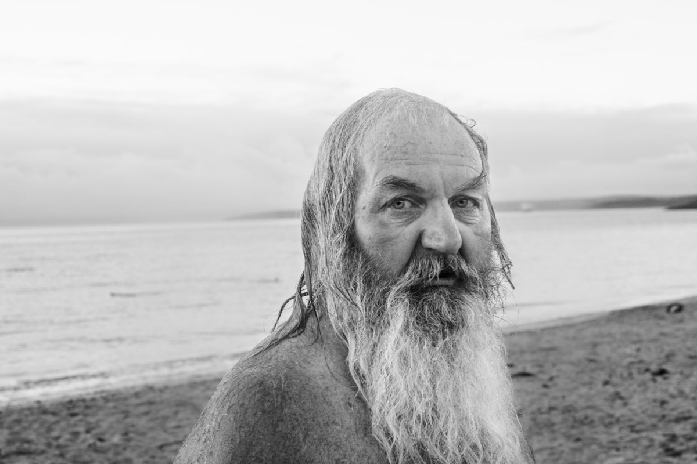
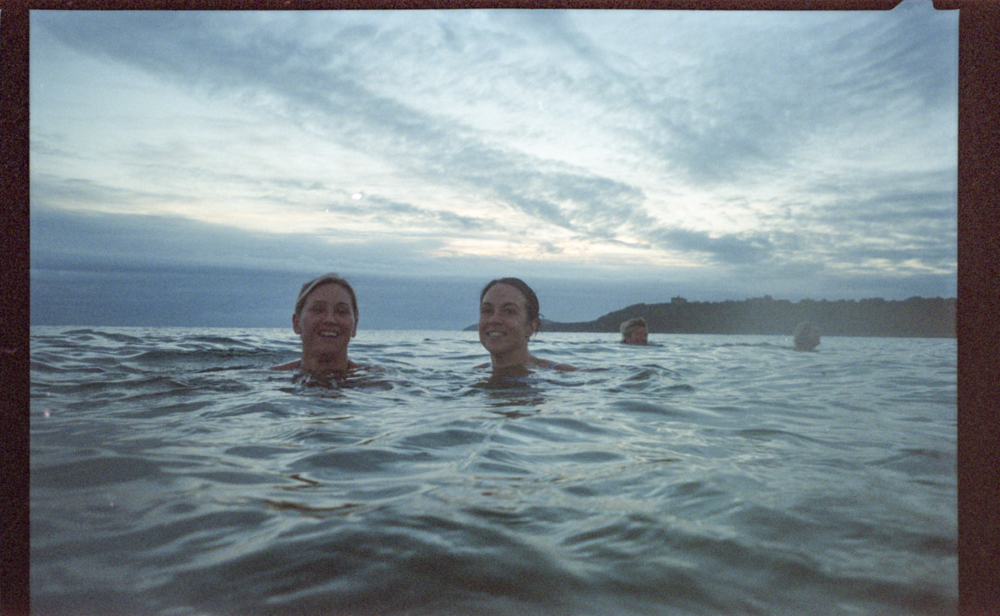
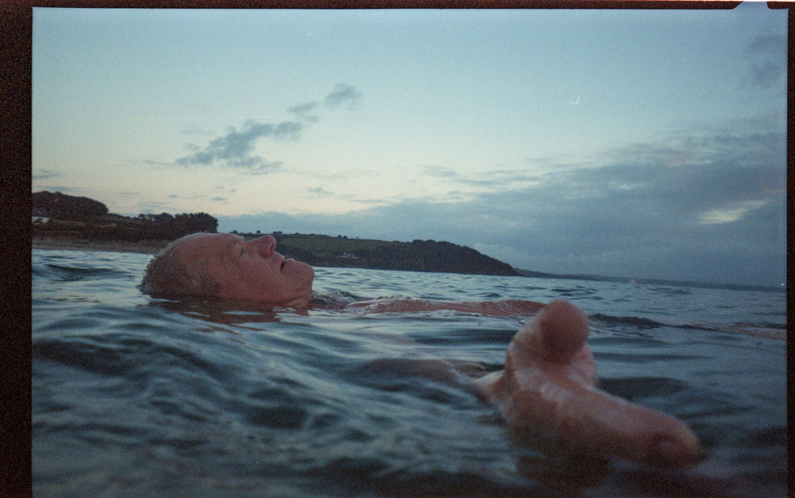
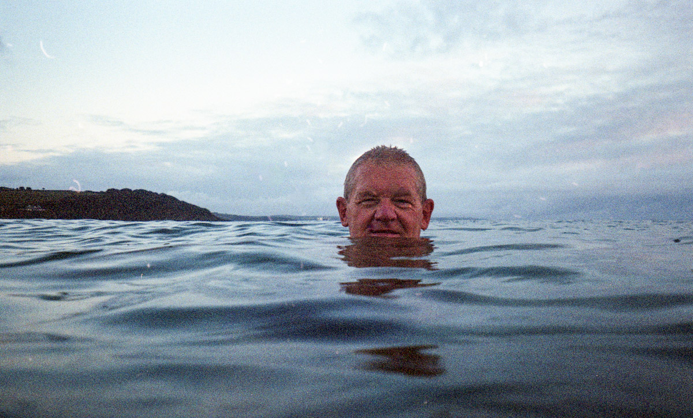
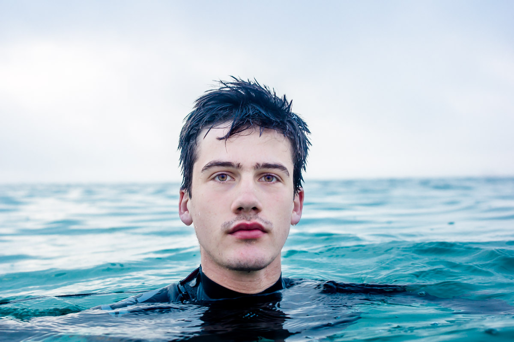
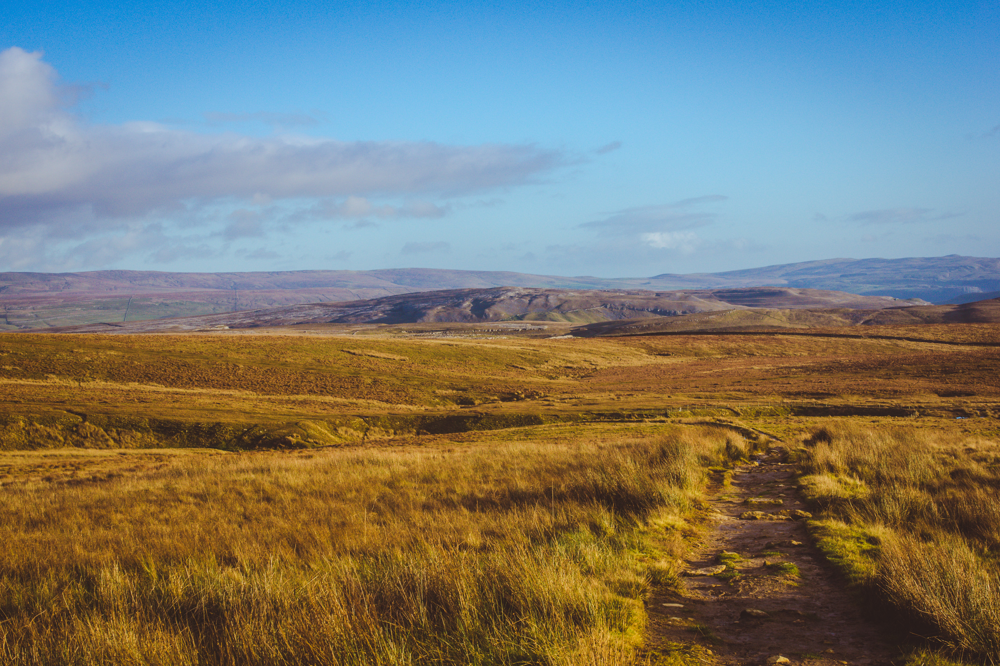
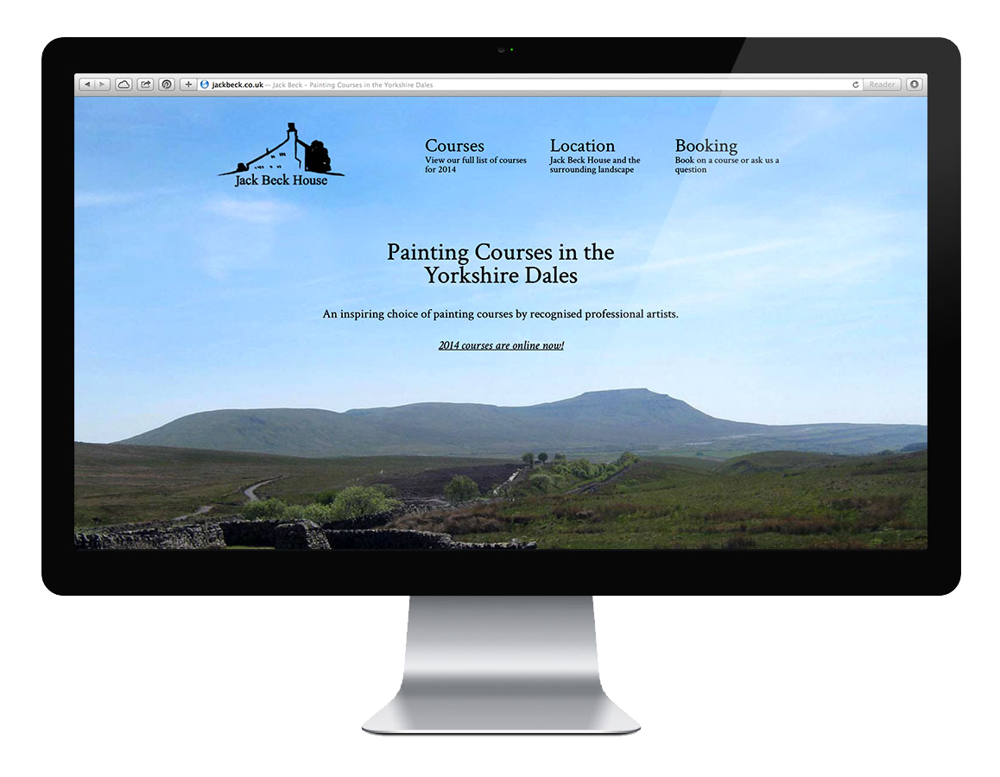

Hey, I'm Sam
I’m a 20 year-old design student currently at Falmouth University.
When not at work, I do kayaking, surfing and other outdoor stuff.
You can reach me by email here,
and tweet me here.
-

The Brief
Write a story based on a time you personally experienced luck. From this – design, print and bind a bespoke book to fully express and embody your story.
The Solution
‘South’ is an account of two days’ hitchhiking in California. Navigating this book requires help from another person, borrowing a decoding device which reveals the directions hidden within the book. Just like hitchhiking, your experience of the book relies entirely on the generosity of others, and would be nothing without it.
Awarded Runner's Up prize at the Stage One Book Exhibition, Falmouth University.


Coptic Stitch Binding
What aspects of hitchhiking could you bring to an exhibition space? Could people experience a taste of the generosity that makes it such a wonderful thing?
Finding your way, with the help of a stranger
In order to navigate through the story, the reader must first obtain one of eight decoding devices in possession of nominated people throughout the exhibition. Once obtained, they can return and use the device to uncover directions within the book.


Nominated key keeper held onto decoders throughout the exhibition. The overlays could be used to decode the book: when laid over the page, directions appear from the mess of letters, allowing you to skip to the right page to continue the story.
- 
Jack Beck have been a popular provider of art courses and holidays for over 15 years. From their picturesque location in the Yorkshire Dales, they host multi-day courses taught by leading British artists.
I was tasked with redesigning their website, freshening up their brand and bringing in new customers.
Visit the website
- 
Each morning, as sunlight creeps over the horizon and cold sea mist recedes, a devoted few make pilgrimage, to Gyllyngvase beach and there into the ocean, into the cold. Committed to meeting each day in the best of ways, they immerse themselves in complete experience, embracing the chill whilst soaking up the first of the day’s light.
The hardiest few seldom miss a day, undeterred by the darkest of winter mornings. They immerse themselves in the cold water - swimming, smiling and taking in the moment for as long as they can muster - until the cold becomes overwhelming. Then, refreshed and invigorated, they each leave their own separate way - back to the ‘real world’ to face the day’s challenges.
Tasked with photographing our interpretation of ‘Real Cornwall’, Luke and I settled on these folk as the perfect expression of what it means to be Cornish… Living life as priority above all other pressures and squeezing the most from the beautiful setting they call home…
    Sam Stephenson designer

- 